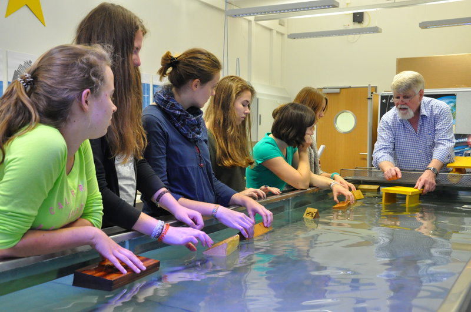
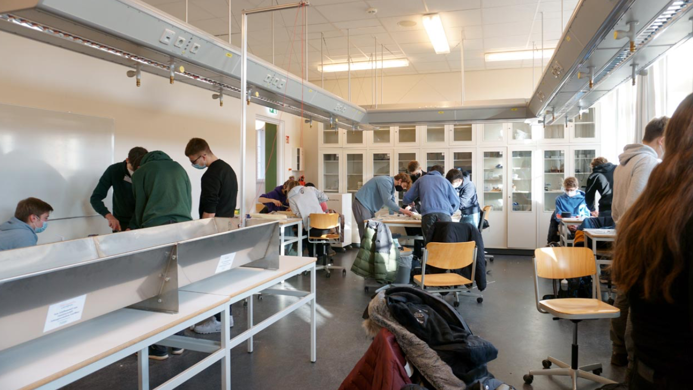
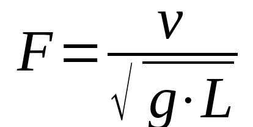

Der Wulstbug ist ein tropfenförmiger Vorbau vieler großer moderner Schiffe. Vorteile:
Nachteile:
Das Heck bezeichnet das hintere Teil des Schiffes. Diese Bezeichnung stammt ursprünglich aus der Zeit, in der das Heck noch als Schutz vor hohen Wellen diente. Es gibt heutzutage eine Vuelzahl an verschiedenen Heckformen. Unterscheiden tut man hier zwischen den drei Formen: Rundgatt, Spitzgatt und Spiegelheck (bzw. Plattgatt).
Das Spiegelheck zeichnet sich durch eine flache Heckabschlussplatte aus. Dieser sogenannte Spiegel steht auf verschiedenste Art und Weise zum Wasser geneigt. Das weit verbreite Rundgatt zeichnet sich durch ein rund zulaufendes Heck aus und wird in einige Unterformen unterteilt. Das Kreuzerheck beispielsweise hat einen S-förmigen Achtersteven, welches sich oben zur Bordwand nach innen zieht. Mit dieser Form bietet das Kreuzerheck einerseits einen guten Schutz gegen die auflaufende See und ist andererseits auch deutlich effizienter, da es den Wasserwiderstand minimiert. Neben dem Kreuzerheck findet man auch andere Rundgatte, wie das Schlepperheck, das Dampferheck und das Heck der niederländischen Plattbodenschiffe. Das Spitzgatt, ein spitz zulaufendes Schiffsheck, verliert immer mehr an Bedeutung. Selten findet man das, einem Bug ähnelnde Heck, noch bei Fischkuttern.
Der Motor treibt den Propeller an. Oft handelt es sich hierbei um einen Dieselmotor. Neuerdings gibt es auch Elektro- und Wasserstoffverbrennungsmotor, jedoch werden diese bei großen Containern nicht genutzt, da sie nicht für weite Strecken und große Lasten geeignet sind.
Der Propeller setzt das Boot in Bewegung. Es besteht aus mehreren Propellerblättern, die in einem gleichbleibenden Abstand angebracht sind. Die Blätter verdrängen Wasser, wodurch auf das Boot (laut 3. Newtonschen Gesetz: Wechselwirkungsprinzip) in entgegengesetzte Richtung einen Kraft wirkt. Gewisse Propeller, wie der Verstellpropeller, können Wasser in unterschiedliche Richtungen verdrängen. So kann man auch ohne Ruder lenken.
Mit dem Ruder lässt sich das Schiff steuern. Durch Querstellung des Ruders wird Druck auf das umgebende Wasser ausgeübt, die zu einer Richtungsänderung des Schiffes führt. Das Ruderblatt ist meist nicht flach sondern leicht stromlinienförmig nach hinten auslaufend. In Hamburg stellt die Firma Becker Marine Systems ein Klappenruder her, mit dem eine bessere Manövrierfähigkeit erreicht wird. Das hintere Teil des Ruderblattes besteht dabei aus einer zusätzlichen Klappe, die selbständig geschwenkt werden kann, um einen höheren Druck auf umfließendes Wasser auszuüben.
Im Fachbereich Schiffbau an der TUHH gibt es die fünf Institute: Entwerfen von Schiffen und Schiffssicherheit, Fluiddynamik und Schiffstheorie, Konstruktion und Festigkeit von Schiffen, Schiffmaschinenbau und Mechanik und Meerestechnik. Das Ziel der Forschung und Entwicklung ist die Sicherheit und Effizienz von Schiffen zu erhöhen. Die Effizienz eines Schiffes lässt sich vor allem durch die Reduzierung des Energiebedarfs erhöhen. Das kann man durch bessere Antriebe oder günstigere Formen erzielen. Durch effizientere Systeme an Bord und qualitativ hochwertigere Produktionsverfahren wird das Fahren sowohl wirtschaftlicher als auch sicherer. Um dies bewerkstelligen zu können, verfügen Institute und Forschergruppen neben computergestützten Simulationsmethoden und Expertise auch über umfangreiche Versuchs- und Laboreinrichtungen. Hierzu gehören Großgeräte und Prüfanlagen wie Windkanal, Schlepprinne, Wellentank , Strömungskanal und Flachwasserbecken als auch Dieselversuchsmotor und Laserverschweißeinrichtungen. Angeboten werden an der TUHH im Bereich des Schiffbaues die Studiengänge:
Es kann auch mit dem Programm dual@TUHH dual studiert werden
Bau- und Reparaturwerften, Motorenherstellern, Komponenten- und Zulieferbetrieben, Klassifikationsgesellschaften, Schiffsversicherern, Reedereien, Bauaufsichten, Design- und Ingenieurbüros, Unternehmensberatungen, und natürlich in der Forschung - gut bezahlte Jobs mit tollen Aufstiegsmöglichkeiten und Chancen für internationale Erfahrungen
Interesse an:
- jährlich zum Wintersemester im Zeitraum vom 1. Juni 2022 bis zum 15. Juli 2022 - Hochschulzugangsberechtigung (i.d.R. Abitur) - MINTFIT-Test erwünscht
Die TUHH gilt als eine der jüngsten und erfolgreichsten Technischen Universitäten in Deutschland. Gegründet 1978 im Bezirk Harburg in Hamburg verfolgt sie das Ziel den Strukturwandel in der Region zu fördern. Ihre Gründung basiert auf folgende Prinzipien: Forschungspriorität, Interdisziplinarität, Innovation, Regionalität, Internationalität. Im Fokus liegt das Leitmotiv, Technik für die Menschen zu entwickeln. Dem Humboldt’schem Bildungsideal verpflichtet, führte sie 1994 als erste deutsche Hochschule den Bachelor-Abschluss ein. Heute sind knapp 100 Professoren an der TUHH tätig und es gibt über 7500 Studierende, 25% davon sind international Studierende. Das Studiumangebot umfasst 15 BachelorStudiengänge mit einer Regelstudienzeit von 6 Semestern. Von A wie Allgemeine Ingenieurswissenschaften bis V wie Verfahrenstechnik. Natürlich gibt es auch Master-Studiengänge, insgesamt 28, mit einer Regelstudienzeit von 4 Semestern. Von B wie Bauingenieurswesen bis W wie Wasser- und Umweltingenieurwesen. Die TUHH bietet eine ganze Palette von Studiengängen.
Die TUHH ist anders als andere Universitäten nicht in Fakultäten eingeteilt. Lernen und Forschen ergänzen sich hier in sechs Studiendekanaten und fünf Forschungsfeldern. Durch die Gliederung der TU Hamburg in Studiendekanate ergibt sich eine direkte und eindeutige Zuordnung einzelner Professorinnen und Professoren zum jeweiligen Studiendekanat.
Die Sechs Studiendekanate sind:
Die Mitglieder der Studiendekanate verfolgen die aktuellen Themen der Forschung. Dabei soll die in fünf übergreifende Forschungsfelder gegliederte Forschungsstruktur der TUHH, welche ganz ohne Fakultäten oder Fachbereiche auskommt, die interdisziplinäre Zusammenarbeit unter den Wissenschaftlerinnen und Wissenschaftlern fördern.
Die Forschungsfelder sind:
Am 11. Januar 2022 sind Studenten der TUHH im Bereich Schiffbau an unsere Schule gekommen. Wir haben einen Einblick in das Studienfach bekommen und haben uns später selbst daran versucht aus einem Schaumblock verschiedene Schiffe nach Anleitung zu bauen. Eines der an diesem Tag entstandenen Schiffsmodelle haben wir geteilt und in die Mitte des Plakats geklebt.
Zu Beginn des Schnupperstudiums hat uns einer der Studenten der TUHH mithilfe einer PowerPoint-Präsentation das Schiffbaustudium nähergebracht. Unter anderem haben wir den Alltag der Studenten sowie die unterschiedlichen Aufgaben kennengelernt, die einen im Studium fordern. Des Weiteren haben wir viel über den allgemeinen Aufbau eines Schiffes und was bei der Konstruktion zu beachten ist, erfahren. Auch ein Vergleich der Schifffahrt zu anderen Transportmitteln inklusive eines Blicks in die Zukunft der Branche wurde uns geboten.
Auf die Präsentation folgend haben wir mithilfe einer Anleitung und den Linienrissen unterschiedlicher Schiffe aus einem Schaumblock das jeweilige Schiffsmodell gebaut. Wir teilten uns in Gruppen auf und konnten uns einen Schiffstyp, wie eine Yacht oder einen Tanker, aussuchen. Für den groben Umriss des Schiffs benutzten wir einen Hobel und fügten den Feinschliff und unseren eigenen „Touch“ mithilfe unterschiedlicher Feilen hinzu.
Nachdem wir die Schiffsmodelle fertiggestellt haben, haben wir einen Wasserkanal aufgebaut, um das Verhalten der Modelle in diesem zu testen. Um einen realistischen Tiefgang zu simulieren, haben wir die Schiffsmodelle mit Steinen und Gewichten proportional zum Tiefgang des echten Schiffs beschwert. Anschließend wurden die verschiedenen Schiffsmodelle mit einem Schleppseil, das über einen Mast läuft und am Ende mit verschiedenen Gewichten beschwert wurde, durch das Wasser gezogen. Diese Konstruktion ist ebenfalls in der Abbildung zu sehen.
Dann haben wir die Zeit gemessen, die die Modelle mit verschiedenen Gewichten am Schleppseil gebraucht haben, um eine bestimmte Strecke zurückzulegen. An Hand dieser Werte konnten wir die dimensionslose Froude-Zahl berechnen. Dafür haben wir die folgende Formel verwendet:
Dabei ist v die Geschwindigkeit des Schiffes, g die Erdbeschleunigung und L die Länge des Schiffs.
Den Hörsaal des Audimax 1 kann man über 3 Etagen erreichen und er bietet Platz für 680 Personen. Jeder Sitz ist zusätzlich mit einem Klapptisch ausgestattet. Die 6 m breite Leinwand bietet gute Sicht.
Das Audimax 2 ähnelt in vielen Punkten dem Audmax 1, ist aber mit 2 Etagen und 340 Sitzen etwas kleiner. Dementsprechend ist die Hauptleinwand nur etwa 4 m breit.
Die TUHH Universitätsbibliothek (TUB) ist seit 1991 zentral in der Mitte des Kampus platziert. wird nicht nur von mitgliedern der Uni, sondern von allen Bewohner Hamburgs genutzt um zuverlässige Informationen zu beschaffen. Sie ist spezialisiert auf Ingenieurswissenschaften
Durch Hamburgs dominanten Hafen ist Schiffsbau besonders hier von hoher Wichtigkeit. Die Fakultät Schiffsbau der TUHH befasst sich mit dem Bau moderner Schiffstypen, von Fahrgast- bist Containerschiffen. So wird ein weites Spektrum an Fachwissen benötigt.
Wenn ihr noch mehr übere eure Uni und die vielfältigen Studiengänge erfahren wollt, empfehlen wir sehr einen Besuch in der Infothek. Hier werden Studienberatungen und persönliche Termine angeboten.
Das DLR_School_Lab an der TU Hamburg bildet einen Ort für Kinder und Jugendliche, an welchem sie eigenständig spannende Experimente zum Thema Luftfahrt und Schifffahrt durchführen können. Hierbei erhalten diese die Möglichkeit die Faszination der Technik und Wissenschaft zu entdecken. Besonders beliebt ist dabei das Erkunden von Flugzeugen und wieso diese trotz ihres enormen Gewichtes, von mehreren Tonnen, vom Boden abheben können. Auch das Erkunden davon, wie Schiffe, auch bei Sturm und Seegang, sicher ihren Weg zum Ziel finden trifft meist auf große Begeisterung.
Inspiriert ist das DLR_School_Lab von dem Deutschen Zentrum für Luft- und Raumfahrt, dem DLR, welches eines der größten und modernsten Forschungseinrichtungen Europas ist. Im DLR werden Flugzeuge der Zukunft entwickelt Piloten trainiert, Raketentriebwerke getestet und Bilder von fernen Planeten ausgewertet. Zusätzlich forschen die vielen Mittarbeiter an Hochgeschwindigkeitszügen der nächsten Generation, an umweltfreundlichen Verfahren zur Energiegewinnung und vielem mehr